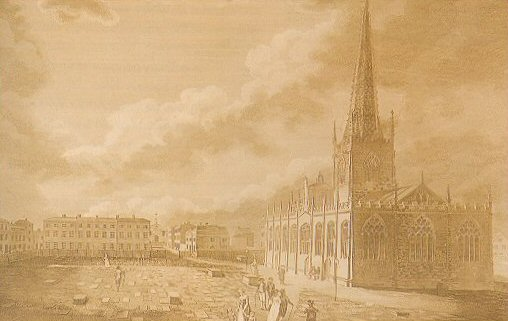
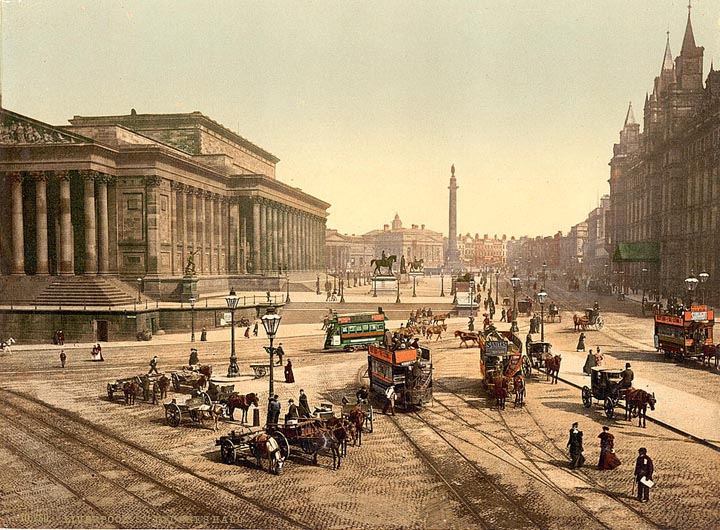
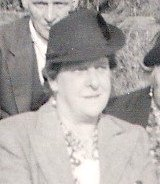
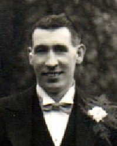

Marsh
Surname Origin: An Anglo-Norman French word "marche" meaning boundary. A name for someone who lived on a border such as the 'Welsh Marches'. Alternatively (Teutonic.) Maresche, Morass, a fen, a tract of low, wet land.

19th century distribution of the Marsh surname
Our Marsh family originate from Yorkshire and have been traced back to Sheffield at the end of the 18th Century. <a href="daniel/daniel.html">Daniel Marsh</a> , was born in Sheffield in 1795, son of George and Rachel Marsh. He was christened in Sheffield parish church, later Sheffield Cathedral.

Sheffield Parish Church, 1793
Little is known of Daniel's early life or that of his parents, but at some stage as a young man he moved from Sheffield to Liverpool (via the United States), where he practiced the trade of Butcher. He first appears in Liverpool in the trade directories between 1834-44 as a Butcher at Liverpool's St Martins Market. He is only shown in the 1841 census living with his wife Mary and mother-in-law Hannah Shaw.

Liverpool
In 1847 he and his new partner Maria are in Manchester and have their first child there. It is possible that Daniel had left his first wife in Liverpool and that Maria was his second wife. However there is no record of either marriage as yet. By 1848 the couple had moved to Kingston upon Hull and again Daniel is described as a butcher. Whilst here they have three further children, including <a href="charles/charles.html">Charles Marsh</a> . The family remain in Great Passage Street, Hull for about 8 years before moving on again.
By 1858 our Marsh family had moved to Nottingham, where Daniel died in 1868. By 1871 Maria was living with her two older sons in Sneinton Nottingham. Alfred and Sarah had already left home and Charles was serving in the army posted to Hythe. On his discharge from the army in 1877 Charles returned to Nottingham and found employment as a lace maker. He and his wife <a href="../marshall/henrietta/henrietta.html">Henrietta Marshall</a> are married in 1880, shortly before the death of Maria. They settle in Nottingham and have nine children, including Hettie Marsh in 1886, Harold Marsh in 1895, <a href="edith/edith.html">Edith Marsh</a> in 1899 and Ethel Marsh in 1902.
Henrietta Kirkham nee Marsh
b 1886

Ethel Knutt nee Marsh
b1902

Alfred Henry (Harold) Marsh
b1895
In 1821 Edith meets and marries John Ambrose, but there marriage is short lived as John dies in 1922. Edith is left alone with a baby daughter and three years later meets and marries <a href="../noble/george/george.html">George Noble</a> , a labourer from St Ann's Nottingham who is a neighbour living with his grandmother. The couple have two children before tragedy strikes again with the death of Edith in 1935. George Noble and the children, Miriam Ambrose, <a href="../noble/ken/ken.html">Ken Noble</a> and Ray Noble, move in with their aunt Hetti (Kirkham) and her husband for support. They were also helped by another of Edith's sisters, aunt Ethel (Knutt).
Current Research : Further research required on the origins of the family in and around Sheffield. Also some more digging in Liverpool could discover whether the Mary Marsh living with Daniel in 1841 is his wife or sister.